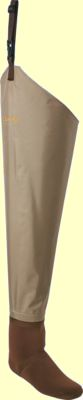

私のお気に入り
釣りの衣類 カベラス社 ストッキングタイプ ヒップウェーダー
今ではあまり渓流釣りのシーンでは見られなくなった、このヒップウェーダーの購入のきっかけは、2018年6月の奥只見釣行で、状況をよく考えずにウェットウェーディングで臨んでしまい、雪解け水のあまりの冷たさに参ってしまったからである。太腿が沈むほど水に浸かって渡渉した際には、大事な場所がキンキン、ジンジン痛いほどで、泣けた。

透湿性のあるチェストハイウェーダーを履けば、釣りには問題無いのだが、現場までのアプローチがとても長く、自転車を使おうと試みたので、如何に透湿性素材のウェーダーとは言え、ゴワゴワかさばって、ペダルを長時間こぎ続けるにはさすがに暑く、疲れてしまうだろうと思えた。
そこで、足に馴染んだウェーディングシューズを履けるヒップウェーダーを探したのだが、今売っている製品はほとんどがブーツフットタイプだった。ストッキングタイプのヒップウェーダーもあったのだが、透湿性素材が使われており、僕には高価過ぎた。それに透湿性素材は耐久性、強度にいささか不安があった。
国内外の通販サイトをいろいろと探し回った結果、Cabela's 社のこの製品を見つけて購入した次第。
良い点
- 厚いコーデュラ・ナイロン製の生地はなんと言っても丈夫。藪こぎもヘッチャラだし、岩に膝をついてもで安心できる。高価な透湿性素材のウェーダーでは躊躇してしまいそうな場所でも平気で入っていける。
- 比較的安価だった。購入時の価格は 48.77USD（約5,450円）、送料込みで 76.77USD（8,579円）であった。送料が高いのが玉にきずだったが、その後、２着目をバーゲンセールで買った時にはさらに安く、本体は29.77USD（約3,300円）になっていた。
- 履きやすい。片足をスポッと入れて、ズボンのベルトにストラップを回し、バックルをはめればそれでOK。当然、脱ぎやすい。
- 軽くて歩きやすい。太腿から腰のあたりがフリーなので、抵抗が少なくウェスト・チェストハイウェーダーのようにゴワゴワ重くない。ブーツタイプでは無く、ウェーディングシューズなので足首周りも非常に楽である。2019年6月の奥只見釣行では、約２時間ほど自転車を漕ぎ続けたが、坂道がきつかったのは別にして、とても楽で快適だった。
- 上部がオープンなので、通気性の無い素材でも、ほとんど内部の蒸れを感じない。
- お好みのウェーディングシューズを履ける。
- 生理現象への対応が楽ちん。慌てた時にはありがたい。（笑）
困った点
- 意外と浅いところで浸水するので、気をつけて行動、徒渉しないといけない。これまで10回ほど使用したが、4回ほど浸水の憂き目に遭っている。（泣） まぁ、トシのせいで、川歩きがおぼつかなくなってきたことも一因だが。
- チェストハイ／ウェストハイウェーダーのつもりで、流れの中でうっかり腰を下ろすとお尻が濡れる。（笑） 釣った魚の写真を夢中になって撮す時には要注意である。
- 雨が降ると、ちょうど太腿のあたりだけ濡れてしまう。レインコートタイプの丈の長い雨具が必要。しかし、今の釣り用レインジャケットはどれもショート丈の製品しか無い。いろいろ探して、EDWIN 透湿 ストレッチ 軽量 レインコート ：ベリオスモッズコートPRO という、富山県のメーカー製のレインコートを発見・購入した。しかし、残念ながら着丈が短くて返品となった。ヒップウェーダーの上端までカバーできる丈が無かったのだ。迷彩柄は気に入ったし肩や胴回りのサイズはピッタリだったのだが.....
- 流れの中で転倒した場合、水が瞬間的、かつ大量に侵入するので起き上がるのが困難になりそう。要注意！
- クロロプレンのストッキング部分が、少々耐久性に欠ける。５回ほど着用後、縫い目から浸水するようになった。ボンドにて修理して再び使用。足首から上のナイロン部分のシーリングは全く問題無く、極めて丈夫に出来ている。２着目を購入し、現在は交互に使用している。
2019年の2月にこのウェーダーがアメリカから届いて、以来10回ほど使用した後の感想としては、送料を別にすれば、コストパフォーマンスの良い、上出来の製品だと思う。昔話で恐縮だが、父親たちの世代や僕らの若い頃は皆、ゴム製の太腿までのバカ長靴（当時はヒップウェーダーなどという言葉は無かった）で渓流釣りをしていて、何も問題は無かったのだから、今の僕にはこれで十二分に役に立つし、釣りになる。
先日、日本のルアーフィッシングの草分けである常見忠さんが、1981年に出版された「ルアー・フィッシング」
という本を購入し読んでいたところ、銀山湖に関するコラムの中で、銀山平の民宿・村杉小屋のご主人、佐藤進氏の逸話が書かれていた。
村杉小屋の親父
村杉の親父佐藤進氏とわたしのつきあいはかれこれ二十年以上にもなる。わたしが奥只見の魚や山のことなどについて知ったかぶりできるのは、親父によるところが大である。
小柄であるがガッシリしたからだ付き、ひょうひょうとした振舞い、ときには真面目な顔から想像できないような冗談も飛び出してみんなを笑わせる。山男にしてはセンスが良く、開高健氏も驚くようなユーモアを発したりする。
銀山を訪れた初期のころは、親父をガイドにしてよく渓流を歩いたものだ。当時わたしが感心したのは、水量の多い奥只見の川を、地下タビのくるぶしあたりまでしかぬらさないで、アッという聞に向こう岸へ横断する、神技にも似た渡渉技術であった。釣りの技術も抜群で、テンカラもルアーも、たちまち自分のものにしてしまった。
親父は現在、ルアー・フィッシングはとうに卒業して、欧米から渡来してきたフライ・フィッシングに挑戦している。これもすぐに免許皆伝の腕前になるだろう。
この一節を読み、さらに、渓流釣りの名人だった父の釣り姿やその訓（おしえ）を思い起こして考えるには、ウェーダーを履いているからと言って、やたらに水の中に歩み込んで釣ろうとしないこと、が肝要であろう。
私のお気に入り 目次へ
サイトマップ
ホームへ
お問い合わせ